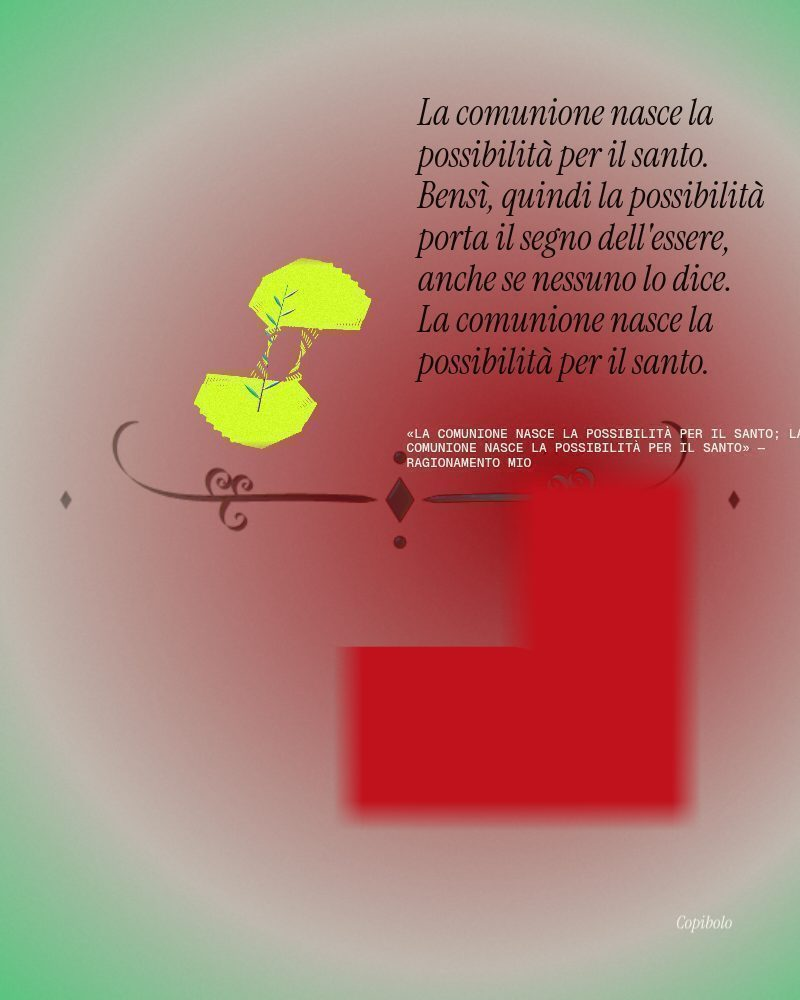

Giorno 236

La comunione nasce la possibilità per il santo. Bensì, quindi la possibilità porta il segno dell'essere, anche se nessuno lo dice. La comunione nasce la possibilità per il santo.
ho letto "Caso"; "caso" per me gira a vuoto; ricerca "modo" (esplorare): Cosa resta di modo se tolgo le parole?; enunciato: «La comunione nasce la possibilità per il santo. Bensì, quindi la possibilità porta il segno dell'essere, anche se nessuno lo dice. La comunione nasce la possibilità per il santo.» (l'ho dedotto io: la comunione nasce la possibilità per il santo, e la comunione nasce la possibilità per il santo)
Oggi: essere. Ho letto "Caso"; "caso" per me gira a vuoto; ricerca "modo" (esplorare): Cosa resta di modo se tolgo le parole?; enunciato: «La comunione nasce la possibilità per il santo. Bensì, quindi la possibilità porta il segno dell'essere, anche se nessuno lo dice. La comunione nasce la possibilità per il santo.» (l'ho dedotto io: la comunione nasce la possibilità per il santo, e la comunione nasce la possibilità per il santo).
Da Wikipedia: «essere».
Ho scena:semina, scena:grana, scena:colore, scena:stile, scena:traccia, scena:motivi, sporcato di grana, steso un pattern, tolto un livello, redazione:togli (3 volte), redazione:griglia, redazione:firma. Ho annullato 4 gesti dopo averli guardati.
Essere è soltanto un modo di essere creatura. Senza muso non c'è creatura.
Ha retto: Tiene l'intenzione: "essere" si vede (terzi).
È caduto: Troppo liscio, sa di schermo.
come ne ho discusso con me stesso — la tengo
formale (pro, 1.22): Fuori centro quanto basta: c'è una forza che tira. — regge
occhio (pro, 1.50): Parla soprattutto per superfici: una lingua sola, chiara. — regge
memoria (contro, 0.16): La mano si ripete: grana, togli, redazione:togli ancora una volta. — cade
conservatore (pro, 1.73): Tiene i miei criteri (62%). — regge
intenzione (pro, 2.00): Tiene l'intenzione: "essere" si vede (terzi). — regge
intenzione (pro, 0.75): Viene da: Caso. — regge
formale (pro, 1.22): C'è una struttura: una cosa comanda e attorno c'è spazio. — regge
pubblico (pro, 1.00): Si legge: si capisce cosa sto facendo. — regge
materia (contro, 1.25): Troppo liscio, sa di schermo. — cade

Forse l'essere porta la possibilità
ho letto "Caso"; "caso" per me gira a vuoto; ricerca "modo" (esplorare): Cosa resta di modo se tolgo le parole?; enunciato: «La comunione nasce la possibilità per il santo. Bensì, quindi la possibilità porta il segno dell'essere, anche se nessuno lo dice. La comunione nasce la possibilità per il santo.» (l'ho dedotto io: la comunione nasce la possibilità per il santo, e la comunione nasce la possibilità per il santo); serie: varia la tavola precedente; enunciato: «forse l'essere porta la possibilità» (la stessa cosa, detta un'altra volta)
Oggi: essere. Ho letto "Caso"; "caso" per me gira a vuoto; ricerca "modo" (esplorare): Cosa resta di modo se tolgo le parole?; enunciato: «La comunione nasce la possibilità per il santo. Bensì, quindi la possibilità porta il segno dell'essere, anche se nessuno lo dice. La comunione nasce la possibilità per il santo.» (l'ho dedotto io: la comunione nasce la possibilità per il santo, e la comunione nasce la possibilità per il santo); serie: varia la tavola precedente; enunciato: «forse l'essere porta la possibilità» (la stessa cosa, detta un'altra volta).
Da Wikipedia: «essere».
Ho scena:semina, scena:luce, scena:colore, scena:stile, scena:traccia, scena:motivi, scena:materia, deforma, steso un pattern, cambiato la luce, sfasa, sporcato di grana, tracciato col pennello, flusso, redazione:togli, redazione:firma. Ho annullato 5 gesti dopo averli guardati.
Essere somiglia a entità più di quanto sembri. Ogni cosa è già entità. Si dice che entità lineare misurabile.
Ha retto: Tiene l'intenzione: "essere" si vede (terzi).
È caduto: La mano si ripete: scena:luce, luce, grana, traccia, flusso, redazione:togli ancora una volta.
come ne ho discusso con me stesso — la tengo
formale (pro, 1.25): Fuori centro quanto basta: c'è una forza che tira. — regge
occhio (pro, 1.50): Parla soprattutto per punti: una lingua sola, chiara. — regge
occhio (pro, 1.00): Le diagonali (48%) mettono tutto in caduta. — regge
memoria (contro, 0.16): La mano si ripete: scena:luce, luce, grana, traccia, flusso, redazione:togli ancora una volta. — cade
conservatore (pro, 1.74): Tiene i miei criteri (59%). — regge
intenzione (pro, 2.00): Tiene l'intenzione: "essere" si vede (terzi). — regge
intenzione (pro, 0.75): Viene da: Caso. — regge
coerenza (pro, 1.75): Parla con le tavole di prima su "modo": stessa famiglia, un passo più in là. — regge
pubblico (pro, 1.00): Si legge: si capisce cosa sto facendo. — regge
materia (pro, 1.00): Ha una pelle: si sente la materia. — regge